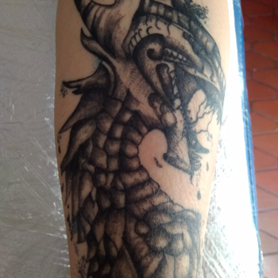

¡Bienvenidos a Tu Tatuaje Gratis!
Si nos dejan nos vamos a tatuar toda la vida 💋

En Tu Tatuaje Gratis, transformamos tu historia en arte. Nuestros tatuadores apasionados y talentosos están listos para crear tatuajes impresionantes y significativos, grandes o pequeños, que reflejen tu personalidad. Únete a nosotros en este viaje creativo y descubre el mundo de posibilidades que ofrece el arte del tatuaje. ¡Te esperamos!
GalerÃa


Como cuidar tu tatuaje?
Un tatuaje es una herida y hay que cuidarlo como tal
- Lava el tatuaje con cuidado, utilizando agua tibia y jabón neutro o antiséptico.
- Seca el tatuaje con una toalla limpia, presionando suavemente en lugar de frotar.
- Una vez seco, aplica una fina capa de la crema recomendada por el tatuador; ¡el tatuaje debe estar siempre bien hidratado!
- Evita arrancar las costras o rascar el tatuaje para una cicatrización adecuada.